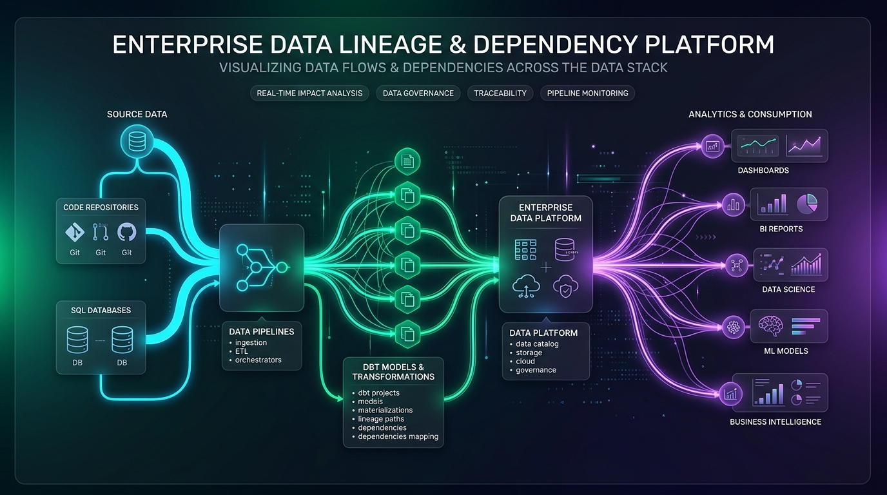
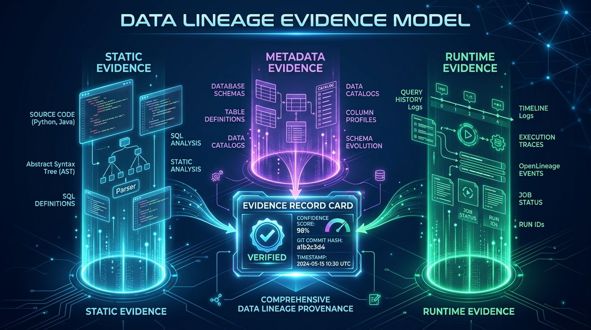
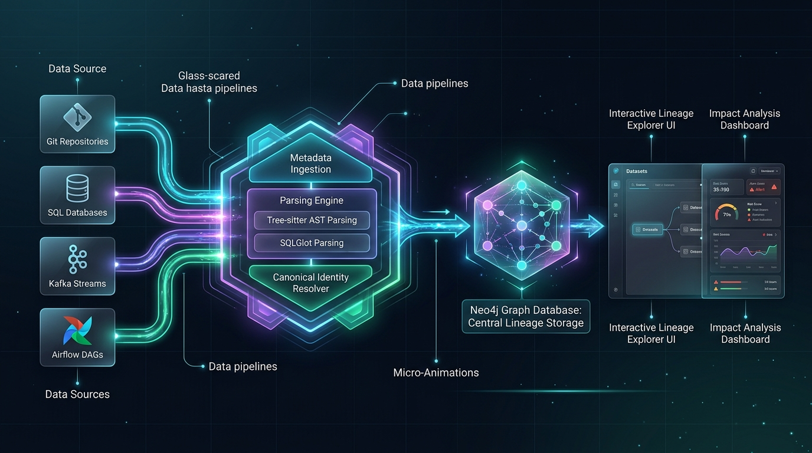

CASE #2026-DL:The Mystery of the Broken Revenue KPI
0/3 Clues Collected (0%)
🟢 INVESTIGATION ACTIVE
Case #2026-DL-0900 • Enterprise Data Lineage & Dependency Tracking
Solving the Enterprise Data Mystery
Follow the forensic trail across 20 enterprise technologies. Gather clues from source code, database catalogs, and runtime events to solve why a single line of Java broke an executive dashboard—and build the engine that prevents it forever.

Prologue • 09:00 AM Incident
The Monday Morning Crime Scene
OUTAGE AT 09:00 AM
It is 09:00 AM on Monday. The CFO opens the executive dashboard to prepare for the board meeting, and the main revenue KPI widget displays a catastrophic error:
🚨 SYSTEM OUTAGE • HTTP 500 INTERNAL SERVER ERRORPROD-CLUSTER-01
org.postgresql.util.PSQLException: ERROR: column "credit_score" does not exist in table "customers"
at com.corp.risk.RiskService.calculateScore(RiskService.java:114)
at com.corp.pipeline.RiskEnricherJob.execute(batch_risk_enricher.py:42)
at snowflake.dbt.daily_risk_summary.run(dbt_model.sql:18) FATAL: Downstream Power BI Dashboard 'Executive Revenue KPI' failed to refresh.
🚨 #incident-war-room-kpi • 4 TEAMS FINGER-POINTINGLIVE CHAT 09:04 AM
📊
BI Analytics Squad
Lead Analyst
"Our dashboard is untouched; the Snowflake warehouse table daily_risk_summary stopped receiving updates!"
🔄
Data Engineering
Pipeline Lead
"Our dbt pipeline failed because upstream table risk_enriched_orders had null values!"
⚙️
Platform Squad
SRE On-Call
"The Python job failed because the backend Java service changed on Friday afternoon!"
💻
Backend Engineer
Java Developer
"I only renamed a variable in one method in a Java repository! How could that break an executive board dashboard four systems away?!"
The Invisible Domino Failure Trail:
Friday 4:00 PM
Java Dev renames field
➔
Postgres Table customers schema drifts
➔
Python Job
KeyError in PySpark
➔
Snowflake dbt
Model compilation fails
➔
Monday 9:00 AM 💥
CFO Dashboard Goes Dark
The Real Problem:Nobody had the full map. In modern enterprises, code lives in GitHub, jobs live in Airflow, schemas live in databases, transformations live in dbt, and dashboards live in Power BI. The Mission: Build Google Maps for Enterprise Data—an intelligent platform that traces any data asset from source code to dashboard, explains why each connection exists, and predicts what will break before changes are merged.
Act I • The Suspects
The 20 Suspects in the Enterprise Fog
Interrogating the Tech Estate
To solve this mystery, we first interrogated the 20 disconnected technologies running across the enterprise estate:
☕ Java Microservices🐍 Python Analytics Scripts🐘 PostgreSQL Databases🏛️ Oracle Stored Procedures❄️ Snowflake Data Warehouse⚡ Apache Kafka Topics🪣 AWS S3 Data Lakes🌪️ Apache Airflow DAGs🧱 dbt Core Transformation Models📊 Power BI Dashboards🔥 Apache Spark Streaming⚡ Redis Caches🔍 Google BigQuery🚚 Fivetran Connectors📈 Looker Models📉 Tableau Workbooks☸️ Kubernetes CronJobs📑 AWS Glue Data Catalog🧱 Databricks Unity Catalog🌍 Terraform Infrastructure
Why couldn't our existing tools solve this outage? We questioned the three typical forensic approaches:
🕵️♂️ Detective Git
BLIND TO PRODUCTION RUNTIME
"I parse source code and ASTs in GitHub repos, but I have no idea what actually runs in production, dynamic SQL constructed at runtime, or database triggers."
📚 Detective Catalog
STOPS AT THE DATABASE DOOR
"I know table and column names from database information schemas, but I stop at the database door. I cannot see math inside a Java method or SQL CTE logic."
🤖 Detective LLM
HALLUCINATES CONNECTIONS
"When asked to map dependencies across a 500,000-line codebase, I invent plausible-looking connections that don't actually exist in the production cluster."
💡 The Epiphany:
A single tool or AI model cannot solve this puzzle. We must construct a Unified Lineage Fabric that gathers forensic clues from three independent planes and binds them with auditable physical evidence.
Forensic Architecture • The 3 Planes
Forensic Convergence: The 3-Plane Evidence Model
CONFIRMED EVIDENCE FABRIC
Traditional tools fail because Git only sees code, catalogs only see table names, and AI models hallucinate. To eliminate blind spots, LineageForge intercepts proof across 3 independent evidence planes:

Act II • Evidence Gathering & Node/Edge Extraction
Gather the Three Forensic Clues
Click each card below to inspect forensic breadcrumbs. As evidence is gathered, our extraction engine parses raw artifacts into graph nodes (entities) and directed edges (dependencies) in the simulation below:
Clue #1 • Static Plane
Code Breadcrumbs
Parsed from Git repos without running code. Tree-sitter & SQLGlot reveal what code could do.
> Engine initialized. Click Clue cards or 'Run Full Plane Simulation' to extract nodes and edges.
Act III • The Breakthrough
Solving the Hardest Riddles
CONQUERING REALITY
Even with clues collected, enterprise data contains deceptive traps that break naive lineage graphs. Here is how our deduction engine solves the three hardest riddles:
🎭 Riddle 1: The Doppelgänger Trap (Dataset Identity)
COLLISION RISK
The Puzzle: We found 4 different tables named CUSTOMERS across the enterprise. If we merge them by name, our lineage graph becomes a tangled web of lies:
❌ Ambiguous Name: CUSTOMERSEnvironment: DEV (Mock Data)
🔍 Riddle 2: The 5 Layers of Reality (Zoom Hierarchy)
MULTI-PERSONA EXPLORER
The Puzzle: Different stakeholders need different levels of detail. The CFO cares about high-level domains, while the developer needs the exact line of Java code.
Level 1 • High-Level Enterprise Domain
Domain-Level Data Flow: Wealth Management ➔ Corporate Risk
Target Persona: CFO, CDO, and Business Executives. Reveals: Cross-domain data governance boundaries without cluttering the screen with database tables or code methods.
👻 Riddle 3: The Ghost Dependency (Control vs. Data Flow)
PRECISION RULE
The Puzzle: In Apache Airflow, Task A >> Task B defines execution sequence. Does that mean data physically flows from Task A to Task B?
⏱️ Control Flow: DEPENDS_ON
Airflow Task Graph: Task A triggers Task B in temporal sequence (e.g., Slack alert, lock cleanup). Warning: Drawing data lineage arrows here creates false ghost links!
📦 Physical Data Lineage: TRANSFORMS_TO
Byte Movement: Task A writes physical records to Postgres/S3, and Task B reads those exact bytes. Our Rule: We never draw a data arrow unless bytes physically moved.
Act IV • System Architecture
Assembling the Deduction Engine
The 4-Component Machine
With our clues gathered and riddles conquered, we assembled the complete machine that continuously stitches the enterprise estate together:

1. Ingestion Net
Read-only connectors scan Git commits, database schemas, and OpenLineage events using least-privilege tokens.
2. Compiler Core
Tree-sitter and SQLGlot extract ASTs, trace CTE expressions, and unwrap dynamic aliases into normalized entities.
3. The Graph Brain
Neo4j executes multi-hop traversals in milliseconds, while PostgreSQL persists audit logs and proof records.
4. Detective's Canvas
Interactive canvas that lets users click any node, expand upstream origins, inspect code evidence, and simulate changes.
Operating the Live Engine
Live Node & Edge Lineage Graph
Click any node to inspect upstream origin, downstream impact, and verified forensic proofs.
🗄️ 1. Source Tables
💻 2. Service Code
🔄 3. ETL Pipeline
❄️ 4. Data Warehouse
📊 5. Final Lineage (KPI)
Selected Node
Technology
98% Verified
Owner / Squad
Platform Team
Physical Location
repo/path
◄ Direct Upstream Origin
None
► Direct Downstream Consumer
None
Key Columns / Attributes
Supporting Forensic Proof (Evidence Plane)
Verified proof description
Act V • Automated Prevention
Simulating the Crime (Automated Blast Radius)
PR Gate Testing
Remember our Monday morning crisis? With our deduction engine running, that crisis can never happen again. Before any engineer merges code, they run an automated Impact Analysis Simulation:
Simulated Action: Severity:
Affected Downstream Assets Traversed:
GitHub Pull Request Gate Status:
Act VI • The Grand Finale
The Big Picture: What We Have Collected & Solved
CONFIRMED EVIDENCE FABRIC
The Mystery is Solved. Below is what we have as the final end-to-end lineage: A deterministic, verified chain showing exactly how raw operational data travels across 5 distinct system tiers to form executive business metrics—with zero blind spots.
Step 1 • Root Source
🗄️ orders
Postgres OLTP • public.orders
✓ Verified Schema
Step 1 • Root Source
🗄️ customers
Postgres OLTP • public.customers
✓ Verified Schema
Step 2 • Code Service
💻 RiskService.java
Spring Boot • calculateScore()
✓ Tree-sitter AST
Step 3 • Pipeline
🔄 batch_risk_enricher.py
Airflow / Spark • DAG #8912
✓ OpenLineage Run
Step 4 • Warehouse
❄️ daily_risk_summary
Snowflake • dbt core mart
✓ dbt Manifest Graph
Step 5 • End Lineage
📊 Executive Revenue KPI
Power BI • Finance Dashboard
★ Final Consumer Target
⚡ End-to-End Column Transformation Mapping (CLL)
Source Column
Transformation Logic
Target Column
Verification Engine
orders.amount (DECIMAL)
Direct Read: calculateScore(amount, credit_score)
risk_enriched_orders.amount
Tree-sitter Java AST
customers.credit_score (INT)
Math Factor: (credit_score / 850.0) * multiplier
risk_enriched_orders.risk_factor
OpenLineage Output Schema
risk_enriched_orders.risk_factor
SQL Aggregation: SUM(amount * risk_factor) AS risk_score
MATCH path = (src:Table {name: 'customers'})-[:READS_FROM|TRANSFORMS|WRITES_TO|SERVES*1..6]->(dst:Dashboard {name: 'Executive Revenue KPI'})
WHERE src.env = 'PROD' AND dst.env = 'PROD'
RETURN path, [n IN nodes(path) | n.name] AS asset_chain, [r IN relationships(path) | type(r)] AS edge_types;
Ready to inspect the deep engineering specifications and architecture blueprint?
1. Executive Summary & Core Stack
Enterprises rarely operate a single technology stack. A typical estate contains Java and Python microservices, SQL databases, stored procedures, ETL orchestrators, Kafka topics, cloud warehouses, and BI dashboards.
Rather than relying on a single tool, catalog, or nondeterministic LLM, LineageForge implements an evidence-backed lineage fabric combining static, metadata, and runtime evidence into a unified internal model.